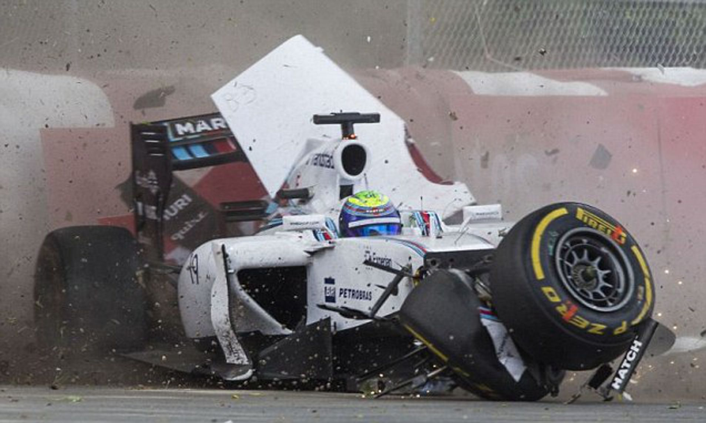

During qualifying for the 2009 Hungarian Grand Prix, a loose part from Rubens Barrichello's car hit Felipe Massa's helmet at full speed, leaving him unconscious. He hit the wall at high speed, but fortunately recovered after a long convalescence.